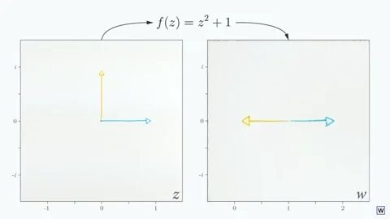
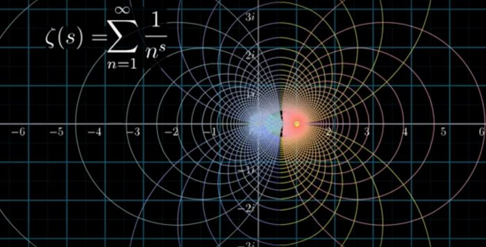

Mathematic Implications
Fundumental Theorem of Algebra Proved
The fundamental theorem of algebra would not have ever been discovered without the discovery of imaginary roots as implemented by Descartes and Wallis. The fundamental theorem of algebra, although not rigorously proven until the 1800s, has been used in many important ways developing algebra as well as other fields that make use of it.
Cuachy's Field of Complex Anylisis
<<<<<<< HEAD The grounds for complex analysis would be laid out by french mathematician Augustin-Louis Cauchy he used the assumption that a complex number could be an input for a function and consequently and output. This was relatively unimportant to his peers as he was just a new mathematician. But his methods inspired many later to come.
=======The grounds for complex analysis would be laid out by french mathematician Augustin-Louis Cauchy he used the assumption that a complex number could be an input for a function and consequently and output. This was relatively unimportant to his peers as he was just a new mathematician. But his methods inspired many later to come. Complex analysis is the study of the properties of complex numbers. It has been contributed to by many great mathematicians and has provided useful formulas and intuitions about other fields in math and science.
>>>>>>> 0f63da6ea389de1f6dadf96f85af9d585a7fcd76"Complete knowledge of the nature of an analytic function must also include insight into its behavior for imaginary values of the arguments. Often the latter is indispensable even for a proper appreciation of the behavior of the function for real arguments. It is therefore essential that the original determination of the function concept be broadened to a domain of magnitudes which includes both the real and the imaginary quantities, on an equal footing, under the single designation complex numbers."
~ Carl Friedrich Gauss
Riemann Zeta Function
Euler first invented the current day Riemann zeta function but because complex numbers weren’t as accessible at the time he didn’t use them. However the function’s namesake comes from german mathematician Bernhard Reimann who applied complex numbers like Cauchy and put the complex numbers into the function. The Riemann zeta function is a link to understanding many intriguing facets of math including understanding the pattern of prime numbers which could improve mathematical understanding greatly. Complex numbers and analysis play a crucial role in understanding the Riemann zeta function which is the frontier for mathematical advancement.
"Mathematicians have tried in vain to this day to discover some order in the sequence of prime numbers, and we have reason to believe that it is a mystery into which the human mind will never penetrate."
~ Leonhard Euler